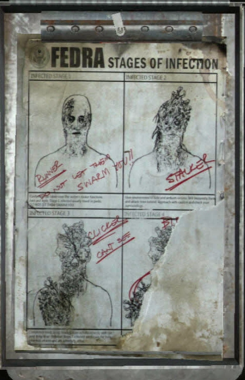
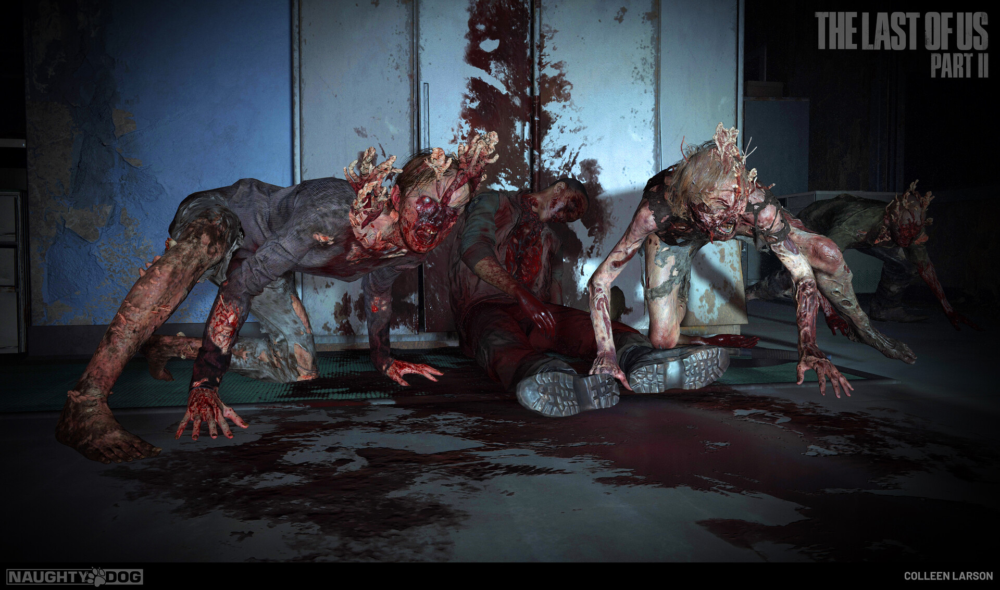
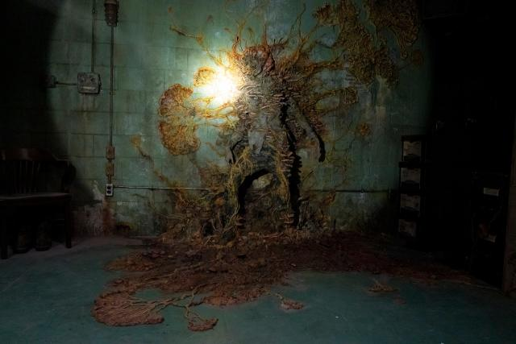
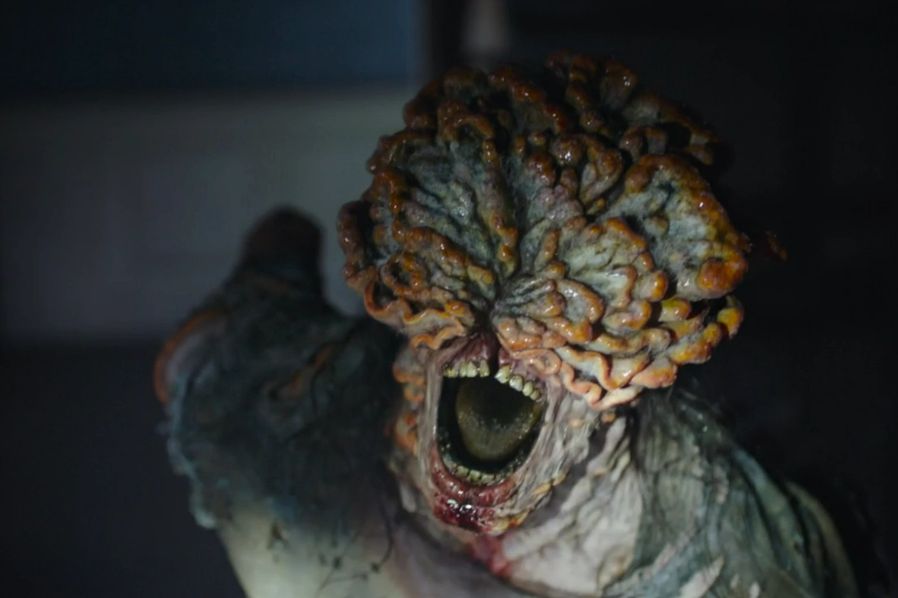

Cordyceps
How does Cordyceps reproduce
The Cordyceps fungal infection spreads through direct contact with an infected individual via a bite or indirectly through airborne fungal spores released by a corpse. These spores can rapidly infect a person, making breathing difficult and movement sluggish within minutes of exposure. In areas with dense spore concentration, the fungus infects the human brain, growing mycelium inside the brain tissue and killing brain cells. This process erases memories and drives the host insane, altering their instincts to solely spread the spores. The infection can transform an individual into a runner within as little as 5 minutes or up to two days, depending on the location of the bite. The bitten area becomes red and black, causing profuse sweating and disorientation. Infected individuals exhibit shaking hands and rapid muscle spasms, displaying clear signs of infection. Driven by animalistic instincts due to the infection, they will attempt to attack or consume any human they encounter, introducing us to the first type of infected, the runner.
Runner
Runners are individuals who have recently come into contact with the Cordyceps infection. They are characterized by their intense speed and tendency to attack in groups or hordes. Runners often exhibit hair loss, discolored skin with lesions, and bloodshot eyes. An interesting addition made in the HBO adaptation is the concept of a hive mind among the infected. When one infected or fungal growth is stimulated, it alerts other runners in the vicinity, causing them to converge and attack the stimulated area in large numbers.

Stalkers
Stalkers are creatures that have been infected for a variable period, ranging from two weeks to a year. As their name suggests, they stalk and hide from their prey in the dark, attacking at opportune moments. Some stalkers have the ability to latch onto walls and allow the Cordyceps fungus to grow, keeping the host alive until potential prey passes by. When the moment arises, the stalker breaks free from its hiding spot and launches an attack. Stalkers often exhibit significant fungal growth around their eyes and shoulders. The infected's skin may start to peel from the face, sometimes causing the nose to decay and fall off as the fungus continues to spread, eventually breaking open the skull.  
Clickers
Clickers are creatures that have been infected for at least one year. At this stage, the fungal growth on their
brain has completely split open the skull. The infected's eyes have either been covered or destroyed by advanced
fungal growth, leaving behind a mass of rotten and jagged teeth. As a result, clickers are blind and rely on a
primitive form of echolocation to locate their prey. Despite their blindness, the fungus grants them enhanced
strength, making them stronger than regular humans and highly dangerous in close-quarters combat. Clickers often
exhibit erratic twitching and may claw at the fungal growth on their faces, indicating a residual resistance
from the host to the fungus, even in the later stages of infection. Due to their inability to see, clickers
produce loud clicking and croaking sounds, which can be heard by survivors, allowing them to avoid detection as
long as they remain silent.
This is the sound of a clicker

Bloader
Bloaters have been infected for more than two years. The fungus has caused them to become slow and blind, but incredibly strong and resilient. The additional fungal growth serves as armor plating. Bloaters have the ability to tear off fungus from their bodies and use them as spore bombs, throwing them at their enemies. However, this additional fungal growth also makes them more susceptible to fire. The advanced fungal growth on bloaters forms armor and plates on their bodies, while also causing significant bloating, earning them their nickname. Interestingly, the fungus seems to offer some protection to the host against elements such as cold and water.


Rat King
The Rat King is a unique stage of infection that developed in a Seattle hospital after over 20 years. It occurs
when multiple infected individuals merge into a single entity. The Rat King is colossal in strength and size,
capable of withstanding significant damage from fire, bombs, and guns. Even after sustaining considerable
damage, it doesn't die but rather its various infected parts start to break off from the larger mass and
continue to attack alongside it.
This creature do not appear in the show, just in the second game.